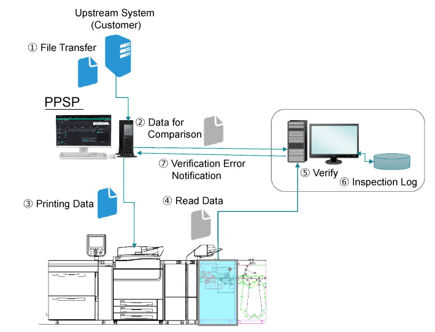
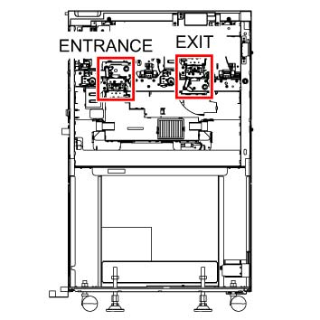

6.2.9.6 SMG Basic 配置 
The 检查 设备 is consisted of two modules: the 检查 management 系统 和 the image 检查 设备.
检查 Management 系统
此 系统 设计为 compare the comparison 数据 obtained 从 the PPSP 使用 scanning 数据 obtained 从 the image 检查 设备, 和 执行 检查 verification. The verification results 将 stored in a 日志 和 the PPSP 将 notified 当...时 an 错误 已 已检测.
Image 检查 设备
双面 image capture 模块 ...所需的 检查 和 real-时间 校正. Sensors located 内部 设备 扫描 输出 media, 和 the images 是 notified 到 检查 management 系统. Real-时间 校正 is 也 implemented 使用 scanned image 数据.

(图 1) ism620002
The SMG is calibrated 和/与 two scanning sections, one 在...上 入口 侧面 和 the 其他 在...上 出纸 侧面.

(图 2) ism620003